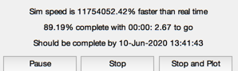
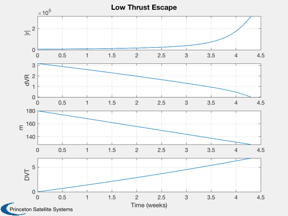
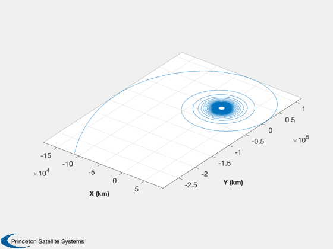

Simulates a low thrust escape from an earth orbit.
The simulation terminates when escape velocity is reached. ------------------------------------------------------------------------ See also Plot2D, TimeGUI, TimeLabl, Mag, LowThrustEscape, VEscape ------------------------------------------------------------------------
Contents
%------------------------------------------------------------------------------- % Copyright (c) 2000 Princeton Satellite Systems, Inc. All rights reserved. %-------------------------------------------------------------------------------
Globals for the GUI
%-------------------- global simulationAction simulationAction = ' '; clear d;
The number of steps and dT
%--------------------------- dT = 1000; a0 = 6768; d.uE = 20; d.thrust = 0.4; dVEscapeEarth = LowThrustEscape( 'earth', a0 ); m0 = 180; mF = m0/exp(dVEscapeEarth/d.uE); t = dVEscapeEarth*1000*0.5*(m0+mF)/d.thrust; d.uE = d.uE*1000;
Create the time array
%----------------------
nSim = ceil(t/dT);
t = (0:(nSim-1))*dT;
Specify the ode113 accuracy
%---------------------------- xODEOptions = odeset( 'AbsTol', 1e-12, 'RelTol', 1e-12 ); % Set up the position and velocity vectors for as many spacecraft as you would like.
These are eccentric, inclined orbits. Units are km and km/s.
%-----------------------------------------------------------------------------------
d.mu = 3.98600436e5;
r = [a0;0;0];
v = [0;sqrt(d.mu/a0);0];
Assemble the state vector
%--------------------------
x = [r;v;m0;0];
Initialize the time display
%---------------------------- dTSim = dT; tToGoMem.lastJD = 0; tToGoMem.lastStepsDone = 0; tToGoMem.kAve = 0; [ ratioRealTime, tToGoMem ] = TimeGUI( nSim, 0, tToGoMem, 0, dT, 'Low Thrust Escape' ); xPlot = zeros(8,nSim); xPlot(:,1) = x;
Simulate
%--------- for k = 2:nSim % Display the status message %--------------------------- [ ratioRealTime, tToGoMem ] = TimeGUI( nSim, k, tToGoMem, ratioRealTime, dT ); % Propagator %----------- [z, x] = ode113( 'FOrbLTE', [t(k-1) t(k)], x, xODEOptions, d ); x = x(end,:)'; xPlot(:,k) = x; if( Mag(x(4:6)) >= VEscape( Mag(x(1:3)), d.mu ) ) break; end % User controls on the GUI %------------------------- switch simulationAction case 'pause' pause simulationAction = ' '; case 'stop' dontPlot = 1; break; case 'plot' break; end end
Close the time GUI
%-------------------
close( tToGoMem.hGUI.fig );
j = 1:k;
Visualize the orbit
%-------------------- [t, c] = TimeLabl( t(j) ); vEscape = VEscape( Mag(xPlot(1:3,j)), d.mu); Plot2D( t, [Mag(xPlot(1:3,j));vEscape-Mag(xPlot(4:6,j));xPlot(7:8,j)],... c, ['|r|';'dVR';' m ';'DVT'], 'Low Thrust Escape' ); hFig = NewFig('Escape Trajectory'); plot3(xPlot(1,j),xPlot(2,j),xPlot(3,j)); XLabelS('X (km)'); YLabelS('Y (km)'); ZLabelS('Z (km)'); grid on axis('equal'); view(37.5,30); rotate3d; Watermark('Princeton Satellite Systems',hFig); %-------------------------------------- % PSS internal file version information %-------------------------------------- 